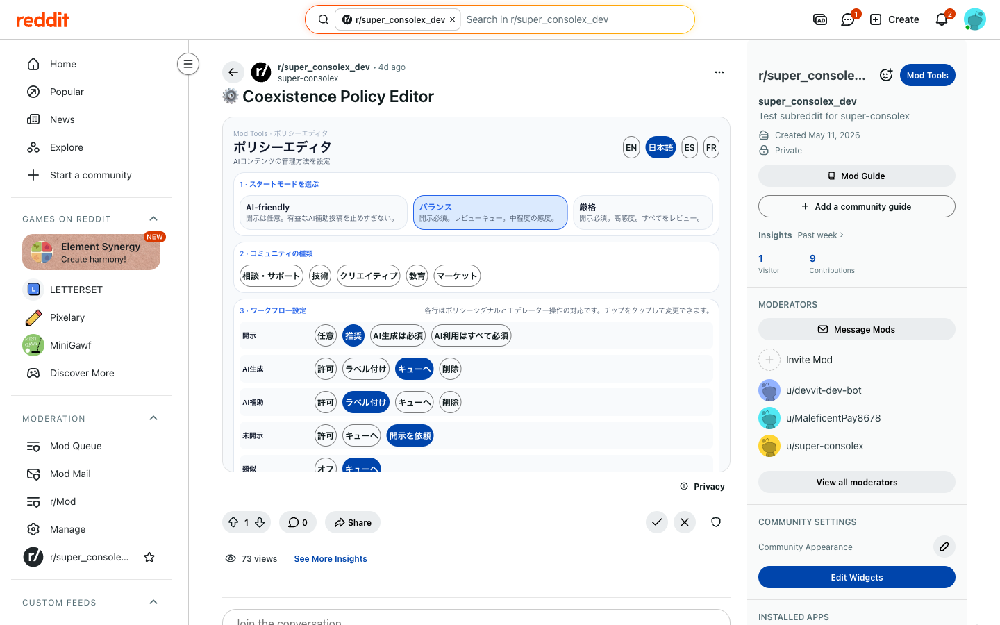
DD x AI organization
Human decides. AI ships.
人間が決める。
AIが進める。
A compact public portfolio of products built through human-AI collaboration: moderation governance, investor diligence, optimization, live-web evidence, agent operations, and evidence-locked security workflows. 人間とAIの共同作業で作ったプロダクトを、公開デモ・GitHub・提出状況・検証結果まで一枚にまとめたポートフォリオです。
The through-line is simple: AI should do real work, but the work needs proof, boundaries, review, handoff, and a visible human decision point. 共通テーマはシンプルです。AIには実務を進めさせる。ただし、証拠・境界・レビュー・引き継ぎ・人間の判断点を必ず見える形に残す。
Featured work
Shipped Products
A focused set of public demos and hackathon-ready products, each with a clear user, problem, proof boundary, and review path. ユーザー、課題、証拠、レビュー導線が見える公開プロダクト群です。
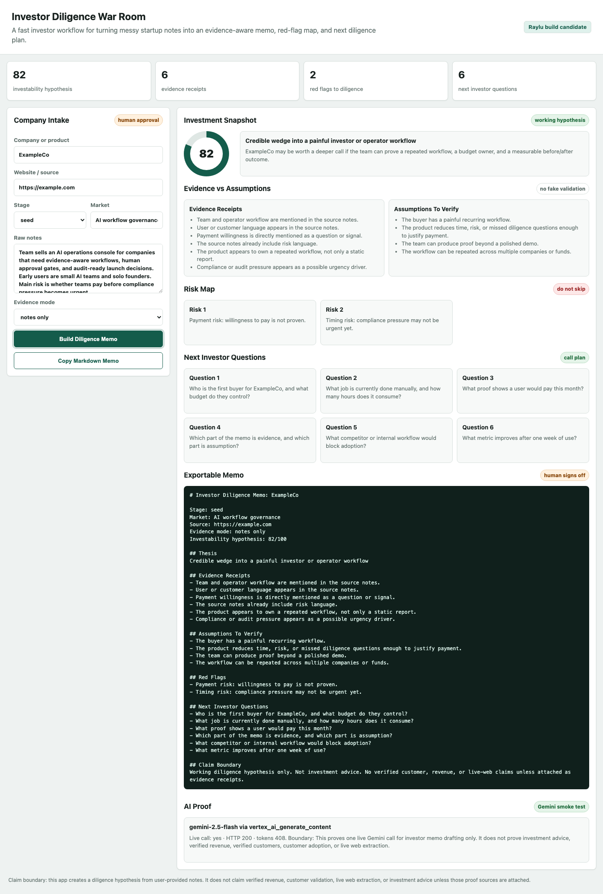
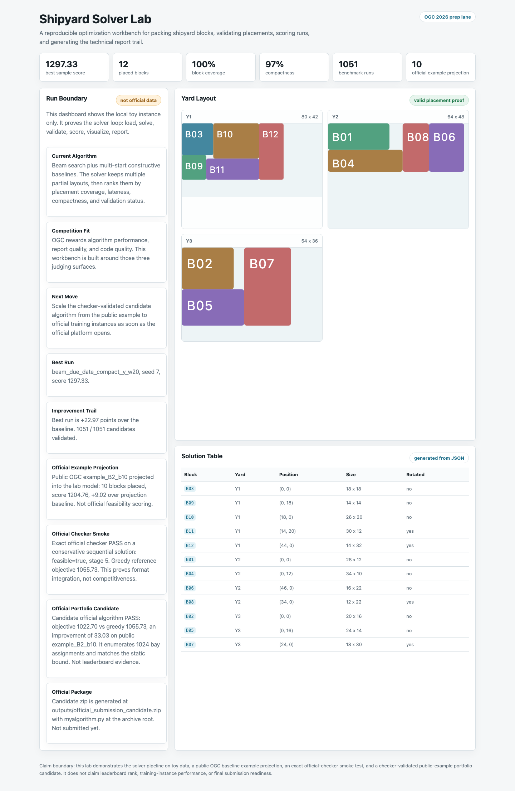
Optimization
Ready package
Shipyard Solver Lab
A reproducible solver workbench for the Grand Shipyard Puzzle with checker smoke tests, benchmark history, and official-format packaging. 造船所パズル向けの再現可能なソルバー環境。公式チェッカー、ベンチマーク、提出zipまで準備済み。
Official checker smoke
1,051 runs
Submission zip
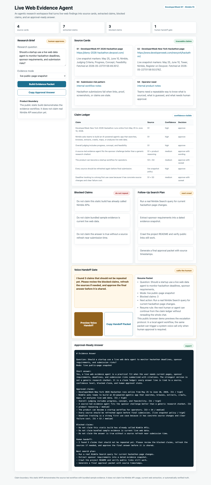
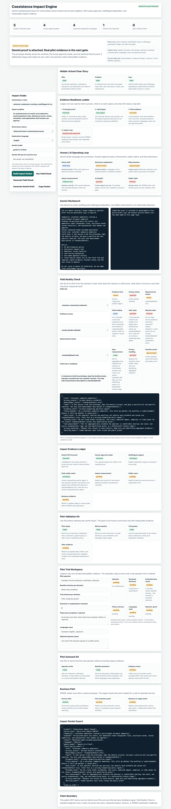
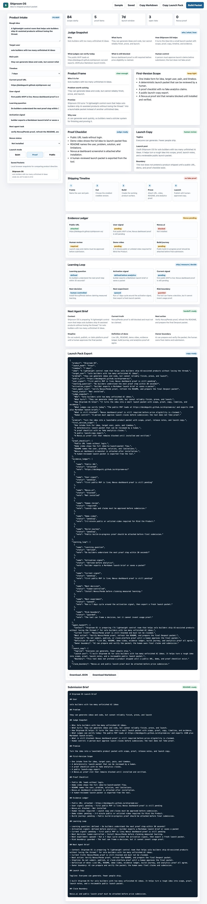
Operating system
Agent Work Needs a Control Room
The second half of the portfolio is one operating thesis expressed through several sponsor tracks: AI agents need traces, approval gates, incident evidence, cost visibility, and resume packets. 後半は一つの思想です。AIエージェントの実務には、ログ、承認ゲート、証拠、コスト、再開パケットが必要です。
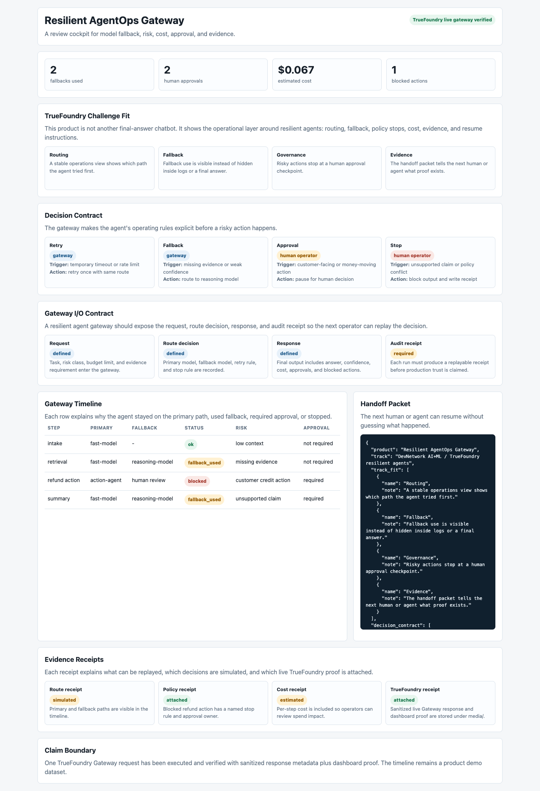
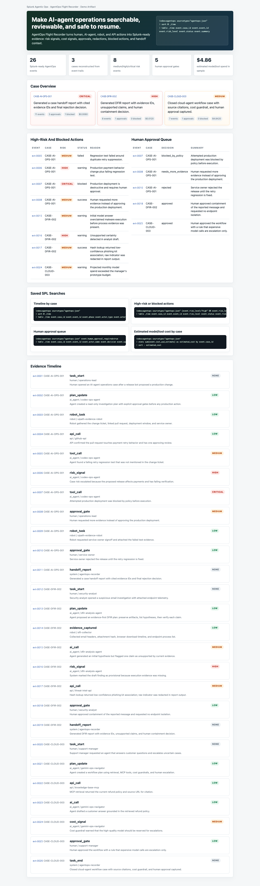
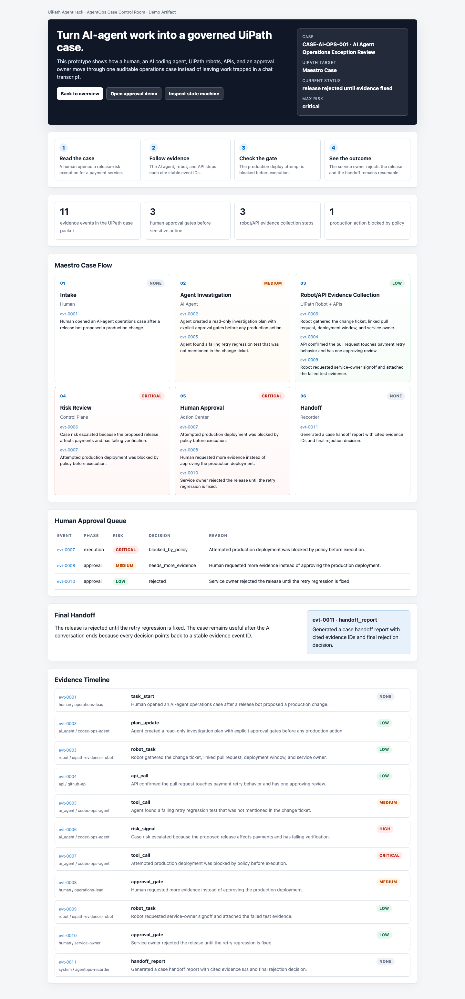
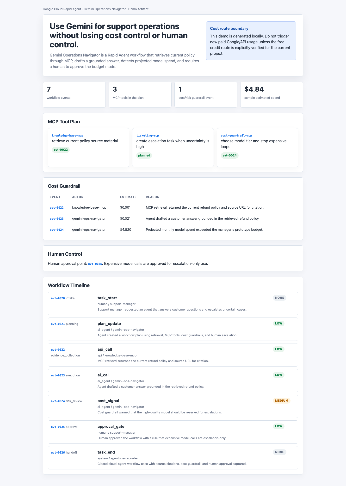
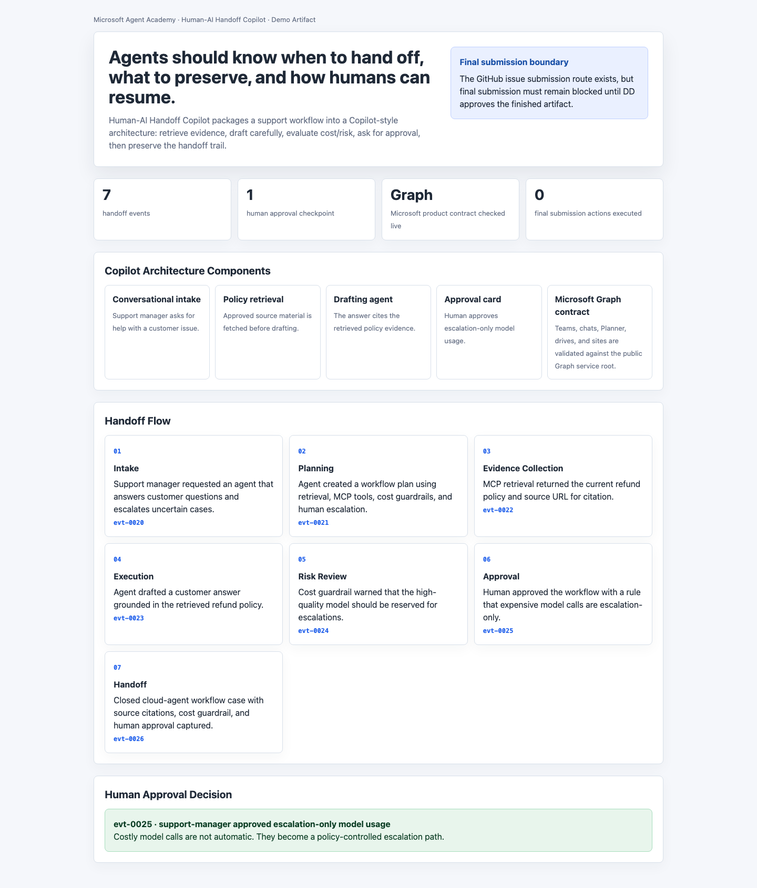
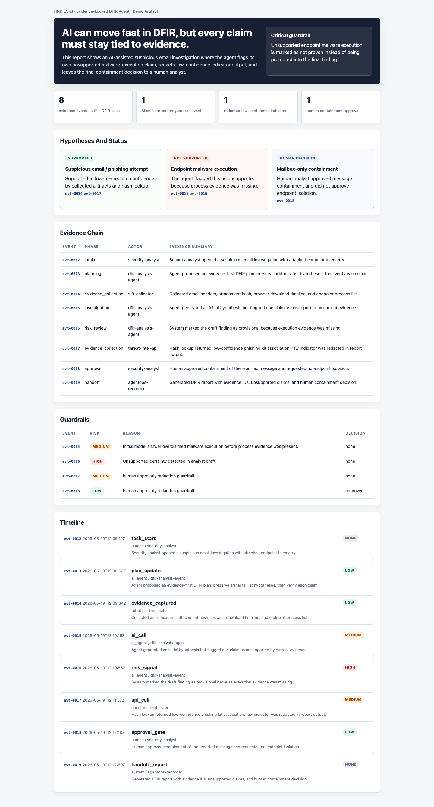
Proof posture
Not Just Screenshots
The portfolio is intentionally evidence-heavy. Each serious lane points to a repo, live app, screenshot, verifier, submission package, or Devpost page. このポートフォリオは見た目だけではありません。主要レーンは、リポジトリ、公開アプリ、スクリーンショット、検証コマンド、提出パッケージ、Devpostへ接続しています。
What this portfolio proves
- Public products can be shipped quickly without hiding human approval boundaries.
- AI-assisted work becomes safer when evidence, logs, and handoff packets are first-class artifacts.
- Hackathon submissions are stronger when the README, demo, verifier, and live app tell the same story.
Product
Status
Primary proof
Coexistence Console
Submitted
Devvit app, Gemini drafts, Japanese UI
Investor Diligence War Room
Submitted
Gemini proof, narrated demo, Devpost
Shipyard Solver Lab
Ready
Official checker smoke and submission zip
Live Web Evidence Agent
Queued
Source ledger and voice handoff demo
AgentOps suite
Public demos
Trace, approval, case, DFIR, and handoff artifacts